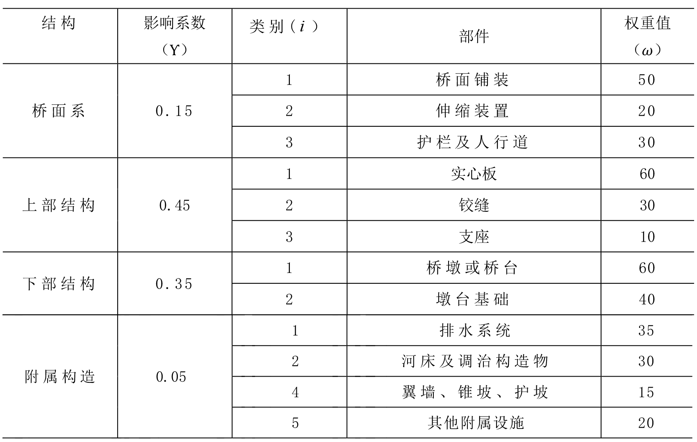
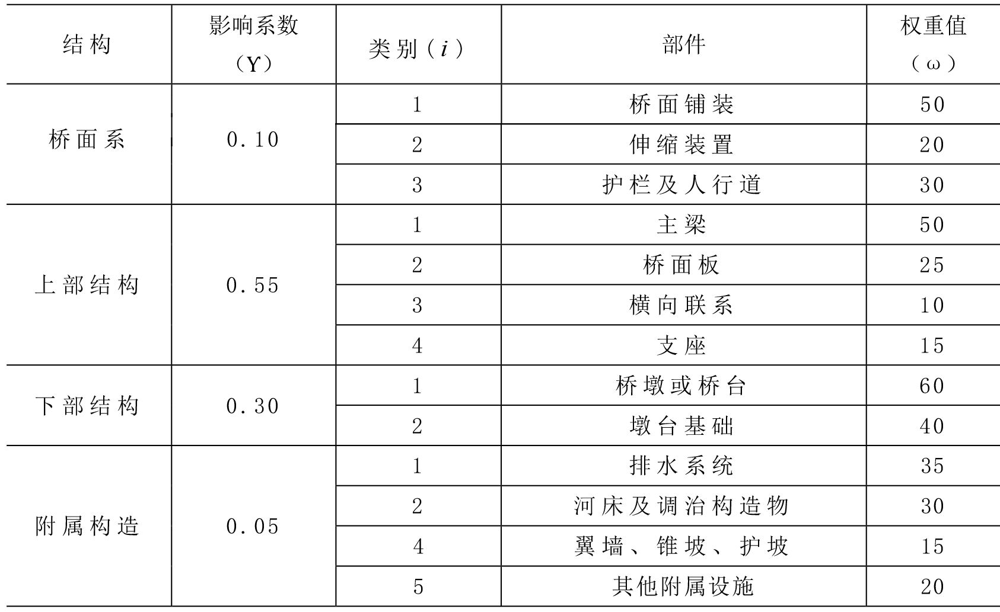
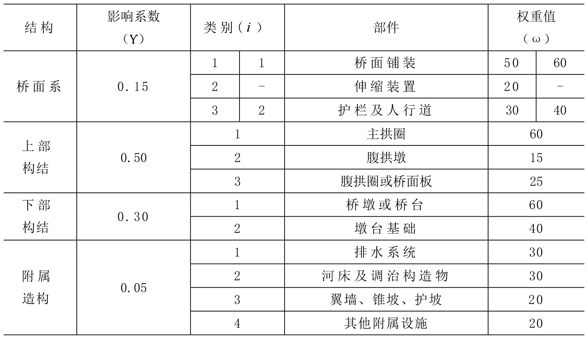
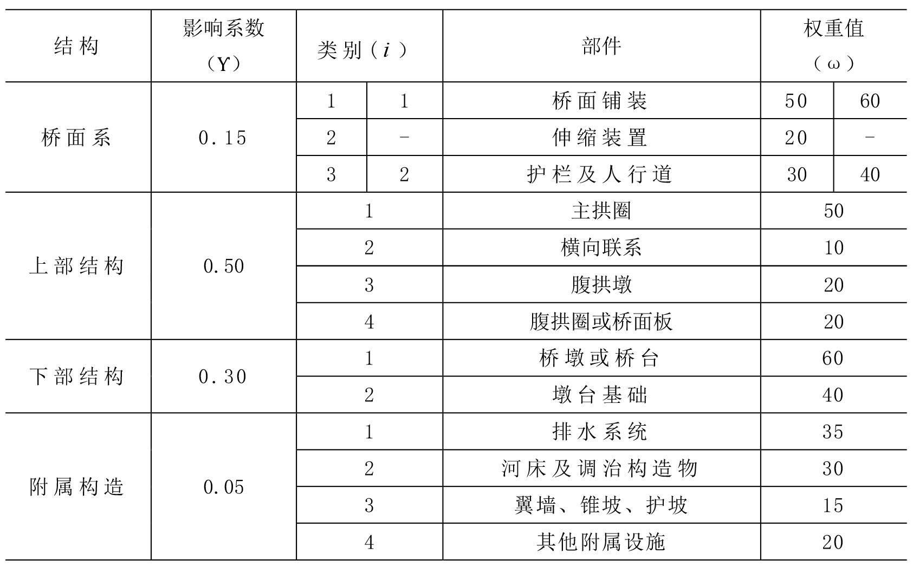
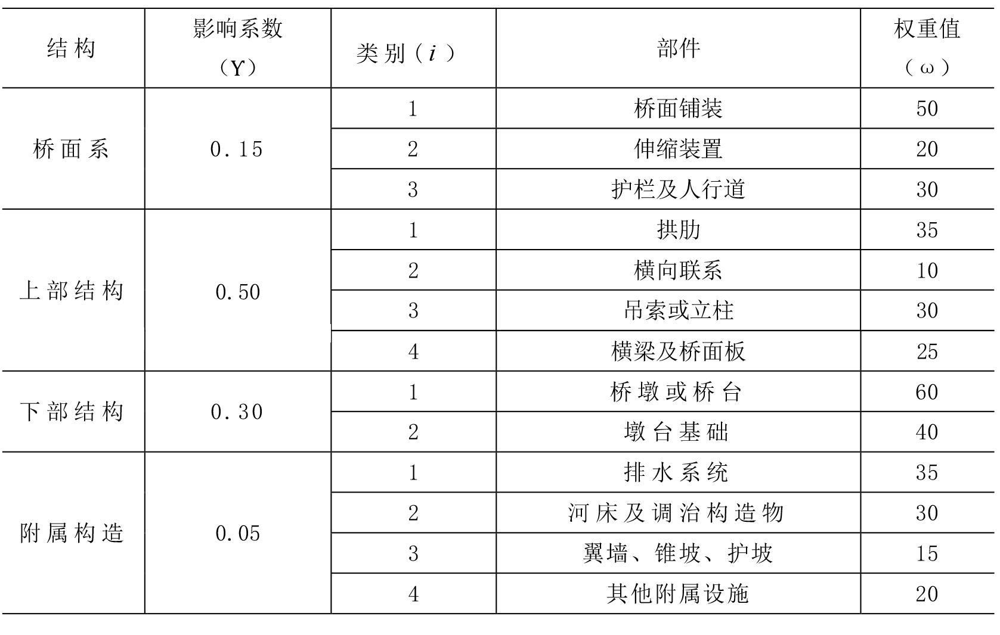
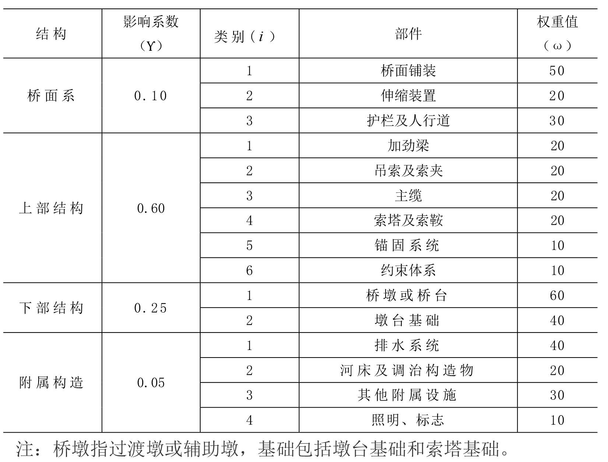
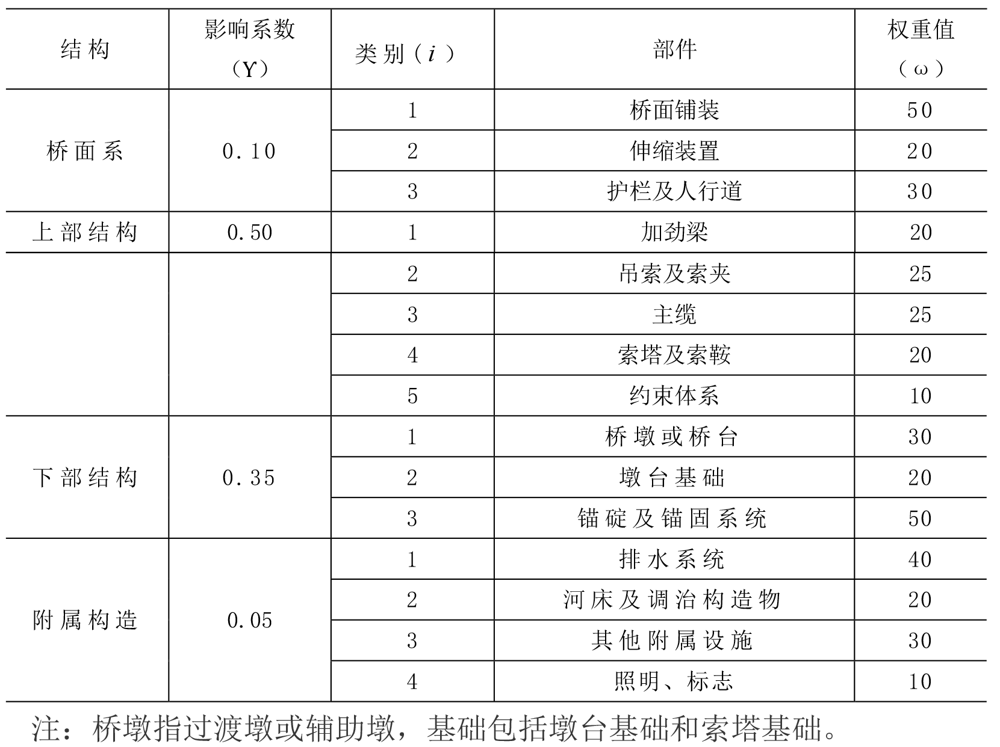
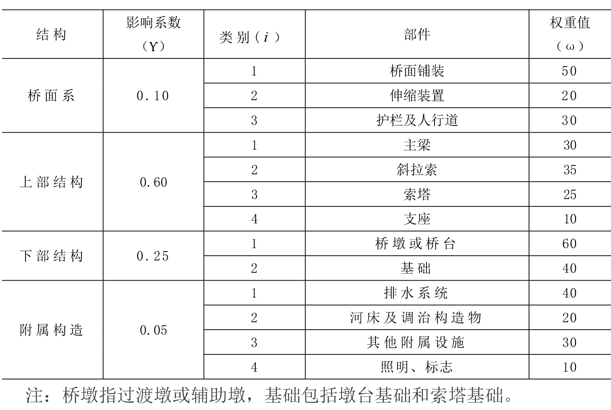

附录B 桥梁部件组成及评定参数
附录B 桥梁部件组成及评定参数
B.1 伸缩缝装置
B.1.1 桥梁技术状况评定时，桥型应分为梁桥、拱桥、组合体系拱桥、悬索桥和斜拉桥，按表 B.1.1 划分。
条文说明：
公路桥梁按受力体系一般划分为梁桥、拱桥、悬索桥和斜拉桥，考虑到吊杆拱桥兼有拱桥和拉吊结构特点，而拉吊构件往往是结构安全的关键构件，为进一步明确部件划分及评定参数分配，评定桥型单独设置组合体系拱桥。
通过对国家公路桥梁基础数据库内 30 余万座桥梁结构类型统计，结合受力特性及各类桥型构件的缺损情况具体表现形式分析，拟定表中的公路桥梁评定桥型划分。
B.1.2 桥梁技术状况评定参数包括结构影响系数及部件权重值，相关参数应按本章规定取值。
B.1.3 其他组合体系桥或异形桥可根据受力体系及截面特征，参照类似桥型划分部件组成及评定参数。
B.2 梁桥
B.2.1 梁桥按上部结构材料及截面特性划分为整体式板桥、装配式实心板桥、装配式空心板桥、装配式组合箱梁及肋梁桥、整体现浇箱梁桥、悬臂施工箱梁桥、钢及钢混组合梁桥。
条文说明：
肋梁桥包括 T 梁桥、I 形梁桥、Π形梁桥、矩形梁桥等肋板式结构桥梁。
B.2.2 整体式板桥部件组成和评定参数应符合表 B.2.2的规定。
B.2.3 装配式实心板桥部件组成和评定参数应符合表 B.2.3的规定。

B.2.4 装配式空心板桥部件组成和评定参数应符合表 B.2.4的规定。
B.2.5 装配式组合箱梁桥及肋梁桥部件组成和评定参数应符合表 B.2.5 的规定。
B.2.6 整体现浇箱梁桥部件组成和评定参数应符合表 B.2.6 的规定。
B.2.7 悬臂施工箱梁桥部件组成和评定参数应符合表 B.2.7 的规定。
B.2.8 钢箱梁、钢桁梁、钢板梁、和钢—混组合梁桥部件组成和评定参数应符合表 B.2.8 的规定。

B.3 拱桥
B.3.1 拱桥按受力特性及结构特征划分为实腹式板拱桥、空腹式板拱桥、肋拱桥、箱形拱桥、双曲拱桥、桁架拱桥、刚架拱桥。
B.3.2 实腹式板拱桥部件组成和评定参数应符合表 B.3.2 的规定。
B.3.3 空腹式板拱桥部件组成和评定参数应符合下列规定：

B.3.4 肋拱桥部件组成和评定参数应符合表 B.3.4 的规定。
B.3.5 箱形拱桥部件组成和评定参数应符合表 B.3.5 的规定。
B.3.6 双曲拱桥部件组成和评定参数应符合表 B.3.6 的规定。

B.3.7 桁架拱桥部件组成和评定参数应符合表 B.3.7 的规定。
条文说明：
桁架拱桥是指以桁架拱片作为主要承重结构的桁架拱桥，一般为中小跨径居多。
B.3.8 刚架拱桥部件组成和评定参数应符合表 B.3.8 的规定。
B.4 组合体系拱桥
B.4.1 组合体系拱桥按结构特征划分为无系杆、柔性系杆、刚性系杆组合体系拱桥。
条文说明：
组合体系拱桥指拱与其他基本结构相组合，如拱梁组合体系桥、吊杆拱桥等。在组合体系拱桥中，以拱梁组合体系桥数量最多，又可分为上承式、中承式和下承式结构，这类桥型在拱桥跨结构中将梁和拱两种基本结构组合起来共同承担荷载，一般由拱肋、吊杆（或立柱）、系杆、行车道梁（板）及桥面系等组成。
上承式结构与板拱或箱拱类似，主梁刚度较大，承担全部或部分水平推力。中承式结构的行车道位于拱肋的中部，桥道结构（行车道、人行道、栏杆等）部分用吊杆悬挂在拱肋下，部分用门式刚架立柱支承在拱肋上。下承式结构通过吊杆将所有纵梁和横梁系统悬挂在拱肋下方，在纵梁、横梁上设置行车道板，组成桥道结构。考虑到上承式组合体系拱桥不设置拉吊构件，缺损情况的具体表现接近于板拱桥或箱形拱桥，因此不做细分。中、下承式结构根据桥墩是否承担水平推力又可分为有推力和无推力两种类型，承担水平推力的系杆又有刚性系杆和柔性系杆两种类型。
为了便于在技术状况评定时简化应用，综合考虑受力体系和系杆构造等结构特性，本标准将组合体系拱桥划分为无系杆、柔性系杆、刚性系杆 3 类组合体系拱桥。
B.4.2 无系杆组合体系拱桥部件组成和评定参数应符合表 B.4.2 的规定。

B.4.3 柔性系杆组合体系拱桥部件组成和评定参数应符合表 B.4.3 的规定。
B.4.4 刚性系杆组合体系拱桥部件组成和评定参数应符合表 B.4.4 的规定。
B.5 悬索桥
B.5.1 悬索桥按主缆锚固方式划分为地锚式悬索桥和自锚式悬索桥。
B.5.2 自锚式悬索桥部件组成和评定参数应符合表 B.5.2 的规定。

B.5.3 地锚式悬索桥部件组成和评定参数应符合表 B.5.3 的规定。

B.6 斜拉桥
B.6.1 斜拉桥按主梁刚度不同划分为斜拉桥和部分斜拉桥。
B.6.2 斜拉桥部件组成和评定参数应符合表 B.6.2 的规定。

B.6.3 部分斜拉桥部件组成和评定参数应符合表 B.6.3 的规定。